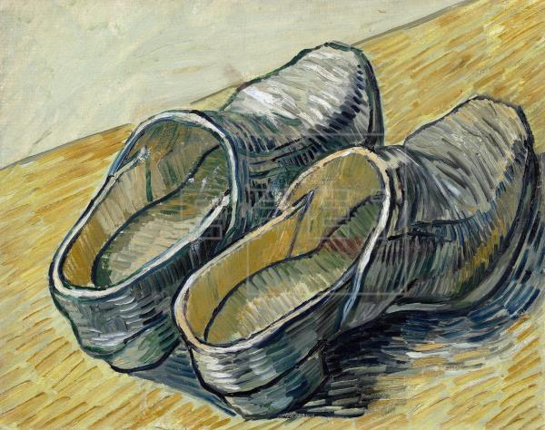

UN PAR DE ZAPATOS DE CUERO

Una antigua tradición compara a los pies humanos con las raíces de un árbol al considerarlos un
símbolo de aquello que conecta al ser humano con el mundo terrenal (mundus), en contraposición
con la cabeza que lo conecta con lo trascendental (alter mundus). El término alter mundus no
remite a un mundo de ultratumba, sino a un mundo que físicamente está aquí, pero en otro plano
de la conciencia. Resulta entonces que desde esta lógica, el calzado representa el proceso de
socialización; es decir: la pátina de normas, actitudes y prejuicios adquiridos por el individuo
(“yo” psicológico) en su pasaje a través de los diversos úteros sociales (la familia, la escolaridad,
el entorno laboral y social), proceso que termina conformándole una personalidad (calzado) que le permite
transitar por el mundus.El problema es que, frecuentemente, el “calzado” adquirido (falsa personalidad)
no está diseñado para transitar por el verdadero camino: el camino trascendental (alter mundus). El camino
del mundus se estructura en base a la marcada separación entre lo propio y lo ajeno, dando lugar a una
ilusoria fragmentación de lo real (unicidad), que conduce indefectiblemente al conflicto destructivo.
El tránsito por el mundus es el sonambulismo, donde el ser humano meramente ejecuta la programación recibida,
encerrado en su individualidad desde donde todo lo divide y a todo se confronta (lo diabólico es lo que divide).
Sin embargo, a la mitad del andar (nel mezzo dil cammin de Dante) se debe renacer (cambiar de calzado), mudar de
perspectiva (verdadera personalidad), si se quiere poder “caminar sobre las aguas”. Vale decir: vivir físicamente
en el mundus (falsa personalidad), pero habitar psicológicamente en el alter mundus (verdadera personalidad); dado
que la clave no está en abandonar el fango del mundo (escapismo), ni entregarse a su destrucción maquinal (sonambulismo),
sino en evaluar a cada paso que tiene valor real y que tiene valor aparente (separar el trigo de la cizaña). Por eso,
debe cuidarse muy bien el estado del calzado psicológico que se lleva (personalidad), procurando evitar que los zapatos
utilizados, como los del labriego, se desgasten por la erosión de las emociones negativas, las cuales empiezan
corrompiendo el espíritu y terminan consumiendo el cuerpo (como en El retrato de Dorian Gray de Oscar Wilde).
Concluimos con que la obra Un par de zapatos de Vincent Van Gogh constituye una excelente oportunidad para
comprender la diferencia fundamental entre la falsa y la verdadera personalidad.